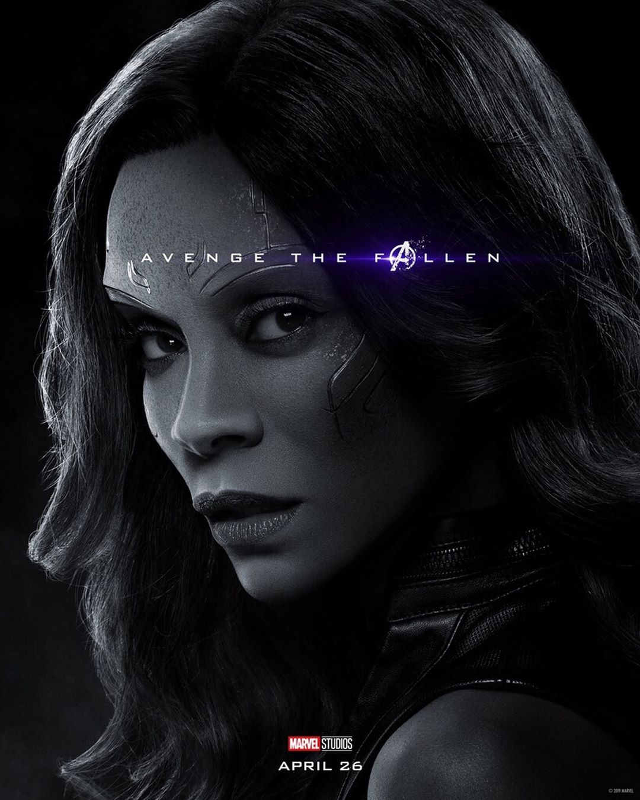

Gamora adalah karakter fiksi Marvel yang diciptakan oleh Jim Starlin. Tokoh Gamora pertama kali muncul pada komik Strange Tales #180 di bulan juni tahun 1975. Gomora sendiri adalah alien Zen Whoberi wanita yang juga bergabung dengan aliansi Guardians of the Galaxy..
Gamora merupakan spesies terakhir dari alien ras Zen Whoberi. Seluruh rasnya dimusnahkan oleh Badoon. Gamora yang hidup sebatangkara akhirnya diadopsi oleh Thanos menjadi anaknya. Selama hidup bersama Thanos, Gamora diajarkan berbuat kejahatan terutama membunuh. meskipun awalnya mau, Gamora tak dapat melawan hati kecilnya yang bertolak belakang dengan ambisi Thanos. Gamora pun menjadi wanita paling berbahaya antar galaxy lantaran kebolehannya dalam bela diri. .
Dalam film Guardians of the Galaxy versi James Gunn, Gamora akhirnya benar-benar melawan kehendak Thanos setelah bertemu Star Lord dkk. Ia pun akhirnya bergabung dengan kelompok Guardians of the Galaxy dan ikut menjaga perdamaian antar galaxy.
Dalam Komik "Infinity Ward", terungkap bahwa kemampuan Gamora menjadi luar biasa setelah dirinya dilatih oleh Thanos. Gamora memiliki kemampuan super yang berhubungan dengan penyembuhan diri dan kecepatan sehingga sulit bagi musuhnya untuk mengalahkannya. Selain Thanos, Gamora juga dilatih oleh Adam Warlock. .